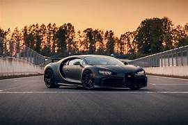
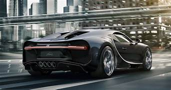

 Chirron Tyres The Bugatti Chiron uses Michelin Pilot Sport Cup 2 tires. These tires are designed for high-performance cars and offer excellent grip and handling. They are also made from a durable material that can withstand the high speeds of the Chiron. Read more
 Chirron Paint The Bugatti Chiron is painted with a special type of paint called polyurethane paint. This type of paint is very durable and can withstand the high temperatures and stresses that the Chiron is subjected to. It is also very resistant to fading and chipping. Read more
About Interer. The Bugatti Chiron interior is a luxurious and high-tech space that is designed to provide both comfort and performance. The seats are made of hand-stitched leather and Alcantara, and the dashboard is trimmed in carbon fiber and aluminum. The Chiron comes standard with a 10.9-inch touchscreen infotainment system, a Bang & Olufsen sound system, and a heads-up display. The Chiron also offers a number of customization options, including different seat colors, trim materials, and stitching patterns.
Top Speed The Bugatti Chiron has a top speed of 440 km/h (273 mph). It is the fastest production car in the world. The Chiron is powered by a 1600-horsepower, 8.0-liter quad-turbocharged W16 engine. The engine is paired with a seven-speed automatic transmission. The Chiron can accelerate from 0 to 100 km/h (62 mph) in 2.4 seconds and has a 0-400 km/h (250 mph) time of 3.6 seconds. The Chiron's top speed is electronically limited to 440 km/h (273 mph) for safety reasons. However, in 2019, a pre-production Chiron reached a top speed of 490.484 km/h (304.773 mph), making it the fastest production car in the world.
World Record? The Bugatti Chiron holds the world record for the fastest production car. On August 26, 2019, a pre-production Chiron driven by Andy Wallace reached a top speed of 490.484 km/h (304.773 mph) on a closed stretch of the Ehra-Lessien test track in Germany. The record was certified by the Fédération Internationale de l'Automobile (FIA).
Start Up Speed The Bugatti Chiron has a very quick start up speed. It can accelerate from 0 to 60 mph in just 2.4 seconds. This is due to its powerful engine and lightweight construction. The Chiron is powered by a 1600-horsepower, 8.0-liter quad-turbocharged W16 engine. This engine is the most powerful ever fitted to a production car. The Chiron's body is made from carbon fiber, which helps to keep the car's weight down. This also helps to improve the car's performance.